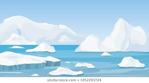

A season is a division of the year marked by changes in weather, ecology, and the amount of daylight. On Earth, seasons are the result of Earth's orbit around the Sun and Earth's axial tilt relative to the ecliptic plane.In temperate and polar regions, the seasons are marked by changes in the intensity of sunlight that reaches the Earth's surface, variations of which may cause animals to undergo hibernation or to migrate, and plants to be dormant. Various cultures define the number and nature of seasons based on regional variations.
In the tropics, where seasonal dates also vary, it is more common to speak of the rainy (or wet, or monsoon) season versus the dry season. For example, in Nicaragua the dry season (November to April) is called "summer" and the rainy season (May to October) is called "winter", even though it is located in the northern hemisphere. In some tropical areas a three-way division into hot, rainy, and cool season is used. There is no noticeable change in the amount of sunlight at different times of the year. However, many regions (such as the northern Indian ocean) are subject to monsoon rain and wind cycles.
Floral and animal activity variation near the equator depends more on wet/dry cycles than seasonal temperature variations, with different species flowering (or emerging from cocoons) at specific times before, during, or after the monsoon season. Thus, the tropics are characterized by numerous "mini-seasons" within the larger seasonal blocks of time.
In the tropical parts of Australia in the northern parts of Queensland, Western Australia, and the Northern Territory, wet and dry seasons are observed in addition to or in place of temperate season names.
 Any point north of the Arctic Circle or south of the Antarctic Circle will have one period in the summer called "polar day" when the sun does not set, and one period in the winter called 'polar night' when the sun does not rise. At progressively higher latitudes, the maximum periods of "midnight sun" and "polar night" are progressively longer.
For example, at the military and weather station Alert located at 82°30′05″N and 62°20′20″W, on the northern tip of Ellesmere Island, Canada (about 450 nautical miles or 830 km from the North Pole), the sun begins to peek above the horizon for minutes per day at the end of February and each day it climbs higher and stays up longer; by 21 March, the sun is up for over 12 hours. On 6 April the sun rises at 0522 UTC and remains above the horizon until it sets below the horizon again on 6 September at 0335 UTC. By October 13 the sun is above the horizon for only 1 hour 30 minutes, and on October 14 it does not rise above the horizon at all and remains below the horizon until it rises again on 27 February.
First light comes in late January because the sky has twilight, being a glow on the horizon, for increasing hours each day, for more than a month before the sun first appears with its disc above the horizon. From mid-November to mid-January, there is no twilight.